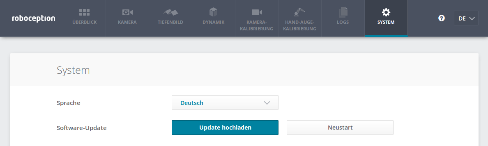
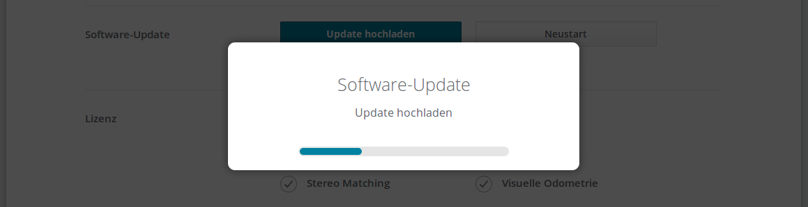
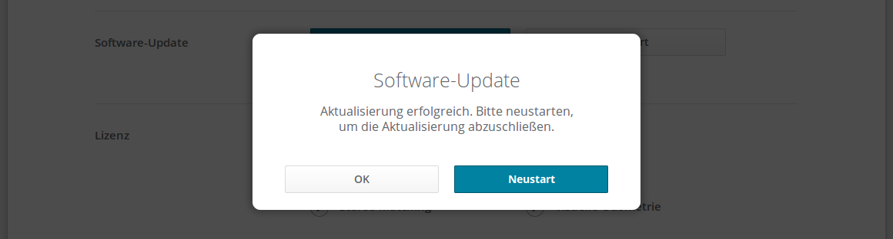

Wartung¶
Achtung
Das Gehäuse des rc_visard muss für Wartungsarbeiten nicht geöffnet werden. Das unbefugte Öffnen des Produkts führt zum Erlöschen der Garantie.
Reinigung der Kameralinsen¶
Glaslinsen sind mit einer Anti-Reflex-Beschichtung versehen, um Spiegelungen zu verringern. Bei der Reinigung der Linsen ist besonders vorsichtig vorzugehen. Mit einer weichen Linsenbürste lassen sich Staub und Schmutzpartikel entfernen. Anschließend kann die Linse mit einem Tuch in kreisenden Bewegungen abgewischt werden: Dabei ist ein Spezialreinigungstuch aus Mikrofaser zu verwenden, um Kratzer zu vermeiden, die die Leistung des Sensors beeinträchtigen können. Hartnäckiger Schmutz lässt sich mit hochreinem Isopropanol oder einer für beschichtete Linsen geeigneten Reinigungslösung (z. B. „Uvex Clear“-Produkte) entfernen.
Kamerakalibrierung¶
Die Kameras werden ab Werk kalibriert. Unter normalen Betriebsbedingungen bleibt die Kalibrierung für die Lebensdauer des Sensors erhalten. Wenn der rc_visard einer starken mechanischen Belastung ausgesetzt wird, wenn er beispielsweise fallen gelassen wird, können sich die Parameter der Kamera jedoch leicht verändern. In diesem Fall lässt sich die Kalibrierung über die Web GUI überprüfen und bei Bedarf neu durchführen (siehe Kamerakalibrierung).
Aktualisierung der Firmware¶
Angaben zur aktuellen Firmware-Version sind auf der Registerkarte System in der Zeile Systeminformationen in der Web GUI angegeben. Diese Informationen lassen sich mithilfe einer GET /system-Anfrage über die die REST-API-Schnittstelle des rc_visard abrufen. Die Aktualisierung der Firmware kann entweder über die Web GUI oder über die REST-API vorgenommen werden.
Achtung
Nach einem Firmware-Update werden alle konfigurierten Parameter der Softwaremodule auf die Werkseinstellungen zurückgesetzt. Bevor das Update vorgenommen wird, sollten daher alle Einstellungen (über die REST-API-Schnittstelle) abgefragt und in der Anwendung oder auf dem Client-PC gesichert werden.
Folgende Einstellungen sind davon ausgeschlossen und bleiben auch nach einem Firmware-Update erhalten:
- die Netzwerkkonfiguration des rc_visard, samt der ggf. vergebenen festen IP-Adresse und des benutzerdefinierten Gerätenamens;
- das letzte Ergebnis der Hand-Auge-Kalibrierung, was bedeutet, dass der rc_visard nicht neu zum Roboter kalibriert werden muss, es sei denn, die Montage wurde verändert; und
- das letzte Ergebnis der Kamerakalibrierung, was bedeutet, dass die Stereokamera des rc_visard nicht neu kalibriert werden muss.
- Schritt 1: Download der neuesten Firmware
Firmware-Updates werden in Form einer Mender-Artifact-Datei bereitgestellt, die an ihrem
.mender-Suffix erkennbar ist.Ist ein neues Firmware-Update für den rc_visard erhältlich, kann die Datei von der Roboception-Homepage (http://www.roboception.com/download) auf den lokalen Rechner heruntergeladen werden.
- Schritt 2: Hochladen der Update-Datei
Soll das Update über die REST-API des rc_visard vorgenommen werden, kann der Benutzer auf die Anfrage
POST /system/updatezurückgreifen.Um die Firmware über die Web GUI zu aktualisieren, muss die Zeile Software-Update auf der Registerkarte System ausgewählt und die Schaltfläche Update hochladen betätigt werden (siehe Abb. 54). Nachdem die gewünschte Update-Image-Datei (Dateierweiterung.
.mender) aus dem lokalen Dateisystem ausgewählt und geöffnet wurde, startet das Update.Abb. 54 Web GUI-Registerkarte System
Hinweis
Je nach Netzwerkarchitektur und Konfiguration kann das Hochladen mehrere Minuten in Anspruch nehmen. Während das Update über die Web GUI läuft, zeigt ein Statusbalken (siehe Abb. 55) an, wie weit das Update bereits vorangeschritten ist.
Abb. 55 Fortschrittsbalken für das Software-Update
Hinweis
Je nach Webbrowser kann es vorkommen, dass der in Abb. 55 gezeigte Statusbalken den Abschluss des Updates zu früh angibt. Es empfiehlt sich, zu warten, bis sich das in Abb. 56 gezeigte Kontextfenster öffnet. Insgesamt ist mit einer Update-Dauer von mindestens fünf Minuten zu rechnen.
Abb. 56 Kontextfenster zum Neustart des Software-Updates
Achtung
Die Webbrowser-Registerkarte, die die Web GUI enthält, darf weder geschlossen noch aktualisiert werden, da der Update-Vorgang anderenfalls unterbrochen wird. Ist dies der Fall, muss der Update-Vorgang neu gestartet werden.
- Schritt 3: Neustart des rc_visard
Um ein Firmware-Update auf den rc_visard aufzuspielen, muss nach dem Upload der neuen Image-Datei ein Neustart vorgenommen werden.
Hinweis
Die neue Firmware-Version wird in die inaktive Partition des rc_visard hochgeladen. Erst nach dem Neustart wird die inaktive Partition aktiviert und die aktive Partition deaktiviert. Kann das aktualisierte Firmware-Image nicht geladen werden, bleibt diese Partition des rc_visard inaktiv und es wird automatisch die zuvor installierte Firmware-Version von der aktiven Partition verwendet.
Über die REST-API lässt sich der Neustart mittels der Anfrage
PUT /system/rebootvornehmen.Nachdem die neue Firmware über die Web GUI hochgeladen wurde, öffnet sich das in Abb. 56 gezeigte Kontextfenster, in dem der Benutzer aufgefordert wird, das Gerät sofort neu zu starten oder aber den Neustart zu verschieben. Soll der rc_visard zu einem späteren Zeitpunkt neu gestartet werden, kann dies über die Schaltfläche Neustart auf der Web GUI-Registerkarte System vorgenommen werden.
- Schritt 4: Bestätigung des Firmware-Updates
Nach dem Neustart des rc_visard ist die Versionsnummer des derzeit aktiven Firmware-Images zu überprüfen, sodass sichergestellt ist, dass das aktualisierte Image erfolgreich geladen wurde. Dies kann entweder über die Web GUI auf der Registerkarte System oder über die REST-API mittels der Anfrage
GET /system/updatevorgenommen werden.Kann das Firmware-Update nicht erfolgreich aufgespielt werden, ist der Roboception-Support zu kontaktieren.
{kind=link}
{kind=link}
{kind=link}
Wiederherstellung der vorherigen Firmware-Version¶
Nach einem erfolgreichen Firmware-Update wird das vorherige Firmware-Image auf der inaktiven Partition des rc_visard hinterlegt und kann von dort bei Bedarf wiederhergestellt werden. Dieses Verfahren wird auch als Rollback bezeichnet.
Hinweis
Es wird dringend empfohlen, die neueste Firmware-Version zu verwenden, die von Roboception zur Verfügung gestellt wurde. Auf das Rollback sollte nur dann zurückgegriffen werden, wenn es mit der aktualisierten Firmware-Version große Probleme gibt.
Die Rollback-Funktion kann lediglich über die REST-API-Schnittstelle des rc_visard aufgerufen werden – mithilfe der Anfrage PUT /system/rollback. Die Anfrage kann entweder mit einem HTTP-kompatiblen Client oder, wie in Swagger UI beschrieben, über einen Webbrowser ausgelöst werden. Wie beim Update-Prozess ist es auch beim Rollback nötig, das Gerät im Anschluss neu zu starten, um die wiederhergestellte Firmware-Version zu laden.
Achtung
Wie bei einem Firmware-Update werden alle Parameter der Softwaremodule auf die Werkseinstellungen zurückgesetzt. Bevor das Rollback ausgeführt wird, sollten daher alle Einstellungen (über die REST-API-Schnittstelle) abgefragt und in der Anwendung oder auf dem Client-PC gesichert werden.
Neustart des rc_visard¶
Nach einem Firmware-Update oder einem Software-Rollback muss der rc_visard neu gestartet werden. Der Neustart lässt sich entweder programmgesteuert mithilfe der Anforderung PUT /system/reboot über die REST-API-Schnittstelle des rc_visard oder manuell auf der Registerkarte System der Web GUI vornehmen. Der Neustart ist abgeschlossen, wenn die LED wieder grün leuchtet.
Aktualisierung der Softwarelizenz¶
Lizenzen, die von Roboception zur Aktivierung zusätzlicher Funktionen erworben werden, können über die Registerkarte System der Web GUI installiert werden. Der rc_visard muss neu gestartet werden, um die Lizenz nutzen zu können.
Download der Logdateien¶
Während des Betriebs dokumentiert der rc_visard wichtige Informationen, Hinweise und Fehler in sogenannten Logdateien. Zeigt der rc_visard ein unerwartetes oder fehlerhaftes Verhalten, kann mithilfe der Logdateien nach der Fehlerursache geforscht werden. Logeinträge lassen sich über die Registerkarte Logs auf der Web GUI ansehen und filtern. Wird der Support kontaktiert (Kontakt), sind die Logdateien sehr hilfreich, um Probleme aufzuspüren. Um diese als tar.gz-Datei herunterzuladen, ist die Option Alle Logs herunterladen auf der Registerkarte Logs der Web GUI auszuwählen.
Die Logs sind nicht nur über die Web GUI, sondern auch über die REST-API-Schnittstelle des rc_visard zugänglich. Hierfür können die Anfragen des Typs GET /logs und GET /logs/{log} verwendet werden.